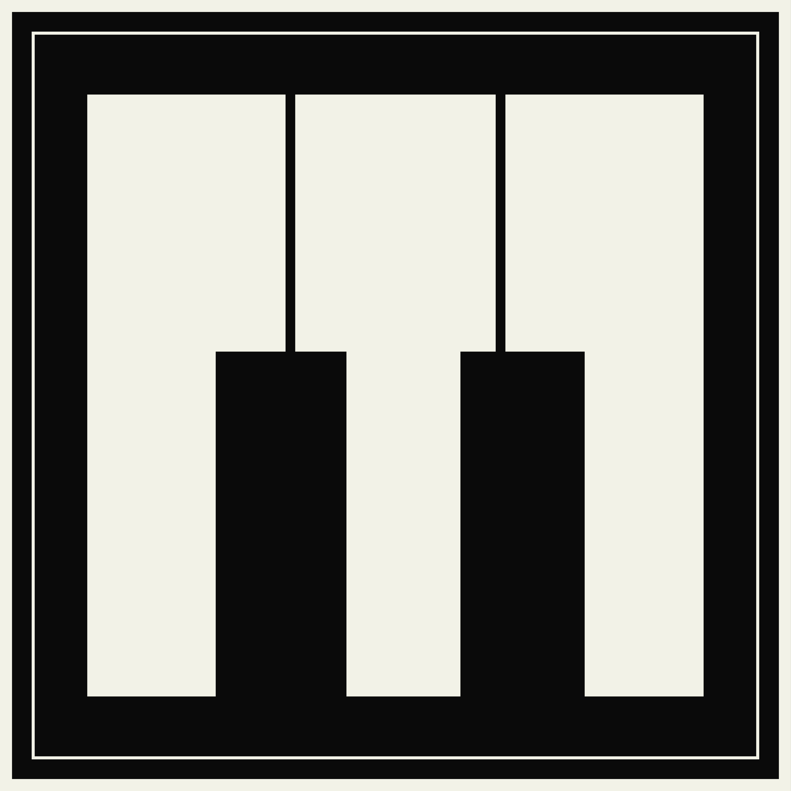
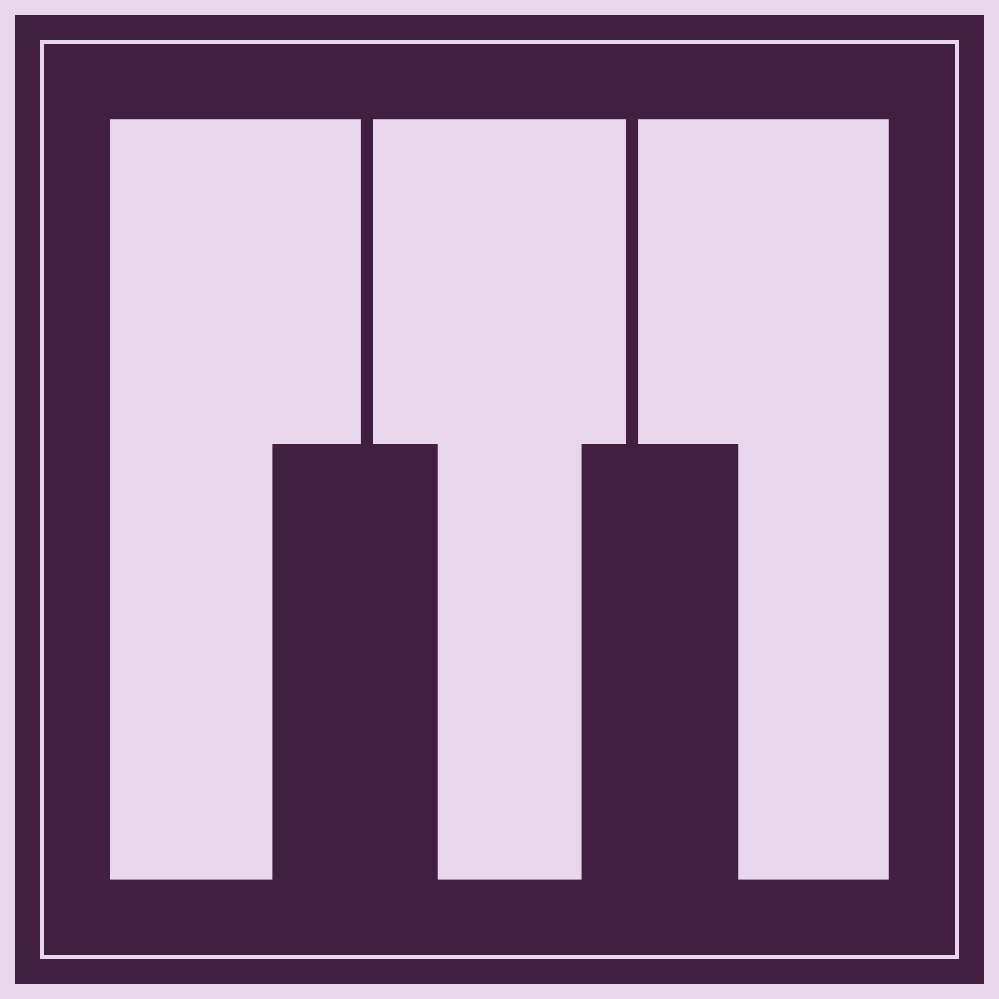
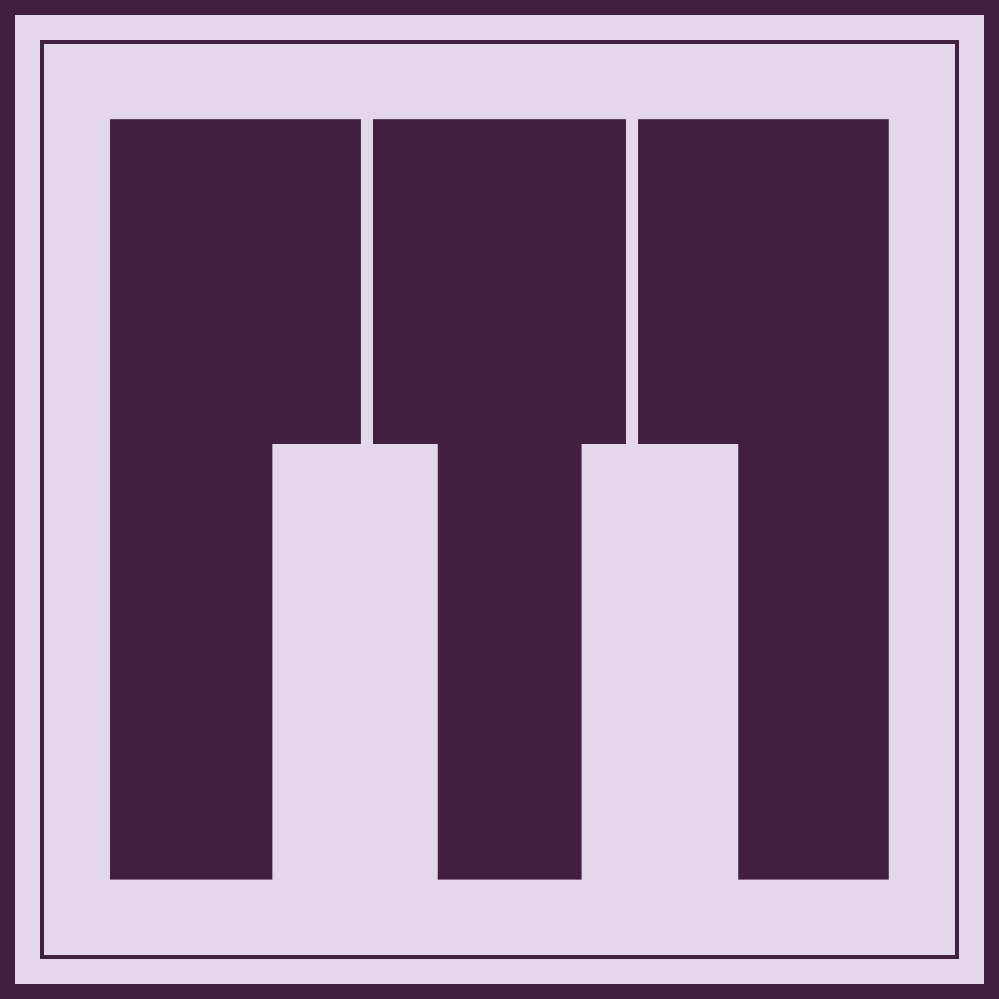
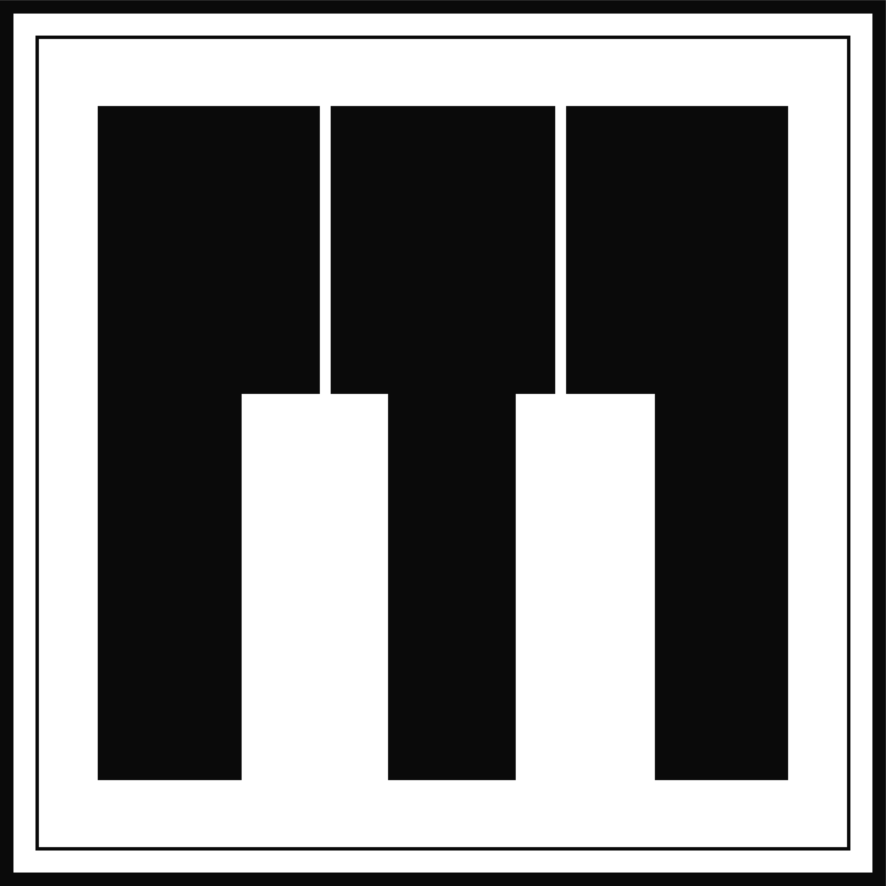

Depósito de Artes · Identidad institucional
Logotipos oficiales del Museo
Archivos oficiales del Museo de la Música de Puerto Rico para consulta y descarga. Selecciona la composición y la variante que necesites.
3 composiciones12 variantesPNG y PDF
IDENTIDAD VISUAL · 2026
Museo de la Música de Puerto Rico
Utiliza los originales correspondientes a cada aplicación. Conserva sus proporciones, colores y composición.
Logos horizontales
Composiciones para encabezados, documentos y medios digitales.


Logos verticales
Composiciones para carteles, piezas gráficas y formatos compactos.


Isotipos
Símbolo gráfico oficial para aplicaciones de identidad visual.








Uso de la identidad institucional
Estas versiones corresponden a los archivos originales entregados por Dirección. No estirar, recolorear, recortar ni reconstruir el logotipo. El ZIP recibido incluye PNG y PDF; no incluye manual de marca independiente.
NegroMorado
LilaBlanco cálido